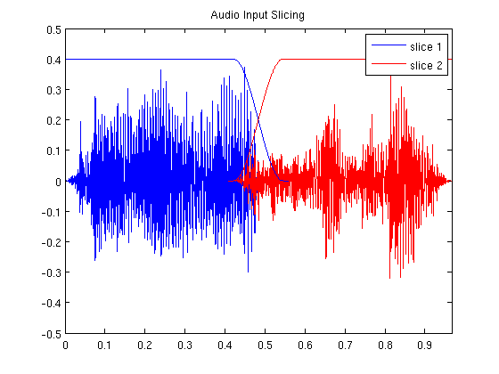
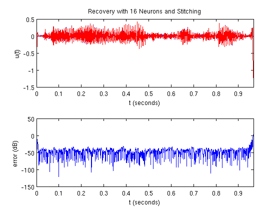

Time Encoding and Decoding of an Audio Sinal Using Gammatone Flters, the Trigonometric Polynomial Approximation, and Stitching
Load input audio signal:
Omega = 2*pi*1500;
[u,fs] = wavread('sound.wav');
u = u';
dt = 1/fs;
dur = length(u)*dt;
t = [0:dt:dur-dt];
N_u = length(u);
N_w = N_u/2;
Generate the windows used to stitch together the recovered slices:
N_overlap = 1000; N_zeros = 100; win1 = gen_window(N_u/2-3*N_overlap/2-N_zeros,N_overlap,N_zeros,'r'); win2 = gen_window(N_u/2-3*N_overlap/2-N_zeros,N_overlap,N_zeros,'l'); N_win1 = length(win1); N_win2 = length(win2); assert(N_win1 == N_win2); N_win = N_win1;
Display the slices:
plot(t(1:N_win),win1.*u(1:N_win),'b', ... t(end-N_win+1:end),win2.*u(end-N_win+1:end),'r', ... t(1:N_win),0.4*win1,'b',... t(end-N_win+1:end),0.4*win2,'r'); xlim([t(1) t(end)]); ylim([-0.5 0.5]); legend('slice 1','slice 2'); title('Audio Input Slicing');
Upsample the audio signal
ratio = 1000;
dt_interp = dt/ratio;
fs_interp = fs*ratio;
t_interp = [0:dt_interp:dur-dt_interp];
u_interp = interp1(t,u,t_interp,'spline');
Generate gammatone filter bank:
N = 16;
h = make_gammatone_fb(t_interp,N); % size(h) == [N, length(t)]
Filter the signal with the filter bank:
v = zeros(size(h)); for n=1:N, v(n,:) = filter_trig_poly(u_interp,h(n,:)); end
Encode the filtered signal:
b = 3+0.1*rand(1,N);
d = 0.001*ones(1,N);
s = {};
for n=1:N,
s{end+1} = iaf_encode(v(n,:),dt_interp,b(n),d(n));
end
Decode the filtered signal using stitching. To save time decoding, the encoded signal is recovered at a coarse time resolution and then upsampled to 48 kHz:
fs_out = 48000; dt_out = 1/fs_out; t_out = [0:dt_out:dur-dt_out];
Find which spikes are to be decoded as part of the first slice and which are to be decoded as part of the second slice:
s1 = {};
s2 = {};
for i=1:N,
s_curr = s{i};
s_curr_cumsum = cumsum(s_curr);
s1{end+1} = s_curr(find(s_curr_cumsum < N_win1*dt));
s2_curr = s_curr(find(s_curr_cumsum >= (dur-N_win2*dt)));
% The first spike intervals in all of the spike trains in s2 must be
% adjusted to all be relative to the same point in time (i.e.,
% the starting point of the second window):
s2_curr(1) = sum(s_curr(find(s_curr_cumsum < (dur-N_win2*dt))))+s2_curr(1)-(dur-N_win2*dt);
s2{end+1} = s2_curr;
end
Decode the slices; note that the value of M must be set to correspond to the length of the window, and the filter bank impulse functions must be recomputed for the time duration of the slice:
M = ceil(N_win*dt*Omega/(2*pi)); h = make_gammatone_fb(t(1:N_win1),N); u1_rec = iaf_decode_filt_trig_pop(s1,N_win1*dt,dt,Omega,M,b,d,h); u2_rec = iaf_decode_filt_trig_pop(s2,N_win2*dt,dt,Omega,M,b,d,h);
Stitch the decoded signal slices together:
u_rec = [win1.*u1_rec zeros(1,N_u-N_win1)] + [zeros(1,N_u-N_win2) win2.*u2_rec];
Plot the recovered signal:
plot_compare(t,u,u_rec,'Recovery with 16 Neurons and Stitching');
 Resample the normalized recovered signal to 48 kHz and save it as an audio file:
u_out = interp1(t,u_rec,t_out,'spline'); wavwrite(u_out/max(abs(u_out)),fs_out,'sound_stitched.wav');
Author: Lev Givon
Copyright 2009-2015 Lev Givon